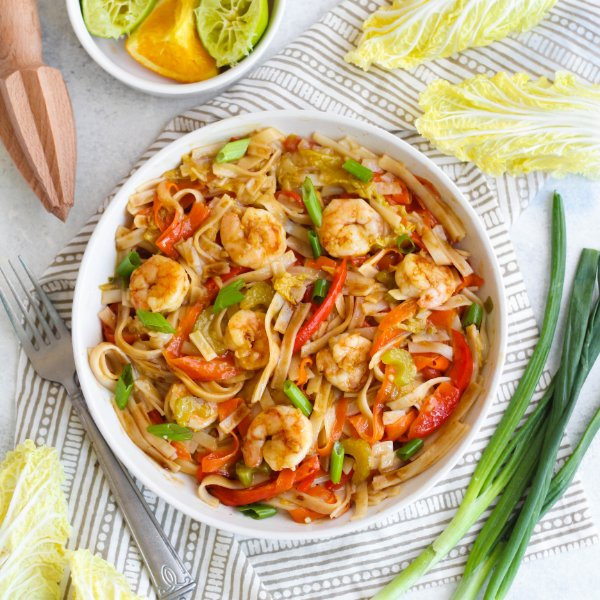

Sweet & Sour Shrimp with Rice Noodles, Carrots and Peppers

Prep Time
35 min
Nutrition (per serving)
662.4 kcalCalories
35.8 gProtein
107.6 gCarbs
10.4 gFat
Full nutrition table
| Calories | 662.4 kcal |
| Total fat | 10.4 g |
| Saturated fat | 1.8 g |
| Trans fat | 0.1 g |
| Cholesterol | 214.3 mg |
| Sodium | 1201.1 mg |
| Carbohydrates | 107.6 g |
| Fiber | 9.6 g |
| Sugars | 29.9 g |
| Protein | 35.8 g |
| Potassium | 1501.8 mg |
| Calcium | 376.6 mg |
| Iron | 3.1 mg |
| Vitamin A | 1485.1 IU |
| Vitamin C | 184.2 mg |
| Vitamin D | 3.4 IU |
Cookware
Ingredients
- 4 mediumcarrots
- 2 stickscelery
- 8 fl ozchicken or vegetable broth
- 4 clovesgarlic
- 2 (1 inch) piecesginger root
- 1 small bunchgreen onions (scallions)
- 2limes
- 1 medium headnapa cabbage
- 2oranges
- 1 ½ lbraw peeled shrimp, fresh or frozen
- 2red bell peppers
- black pepper
- brown sugar
- cornstarch
- extra virgin olive oil
- fish sauce
- flat rice (pad thai) noodles
- soy sauce
Steps
- If using frozen shrimp, place them in a colander and run under cold water to thaw them slightly and remove any ice crystals. (If using fresh shrimp, skip this step.) Place the shrimp on a clean towel or paper towels and pat dry.1 ½ lb raw peeled shrimp, fresh or frozen
- Fill a medium saucepan halfway with water and bring to a boil. Remove from heat and add rice noodles. Soak for 10 minutes or according to package directions. Then drain in a colander and rinse.10 oz flat rice (pad thai) noodles
- Wash and dry the fresh produce.4 medium carrots
2 red bell peppers
2 sticks celery
1 small bunch green onions (scallions)
2 (1 inch) pieces ginger root
1 medium head napa cabbage
2 limes
2 oranges - Peel the carrots; then using the peeler, run it along the carrot to make long, noodle-like strips. Seed and slice bell peppers into thin strips. Trim ends of celery and slice into small pieces. Transfer all to a large bowl.
- Trim off and discard the ends of the green onions; cut the onions crosswise into small pieces. Add half of the onions to the bowl with the sliced vegetables (reserving the rest for garnish).
- Peel and mince or grate the ginger. Peel and mince the garlic.4 cloves garlic
- Heat a large pot over medium heat.
- Once the pot is hot, add oil and swirl to coat the bottom.2 tbsp extra virgin olive oil
- Add the sliced vegetables, ginger, garlic, and black pepper to the pot. Sauté until soft, 5-6 minutes.¼ tsp black pepper
- Trim off and discard the root end of the cabbage; halve the cabbage lengthwise, then thinly slice crosswise.
- Add the cabbage to the pot. Cook, stirring occasionally, until cabbage softens, 3-4 minutes.
- Add the shrimp to the pot and cook, stirring occasionally, until lightly browned and cooked through, 2 to 4 minutes.
- Juice the limes into a small bowl. Add the cornstarch and whisk together.2 tbsp cornstarch
- Juice the oranges into the pot; add broth, sugar, soy sauce, and fish sauce. Bring to a boil over high heat, then stir in the cornstarch mixture. Reduce heat to low, add rice noodles, and simmer, stirring occasionally, until slightly thickened, 2-3 minutes.8 fl oz (1 cup) chicken or vegetable broth
¼ cup brown sugar
¼ cup soy sauce
2 tbsp fish sauce - Divide between bowls, garnish with remaining green onion, and enjoy!